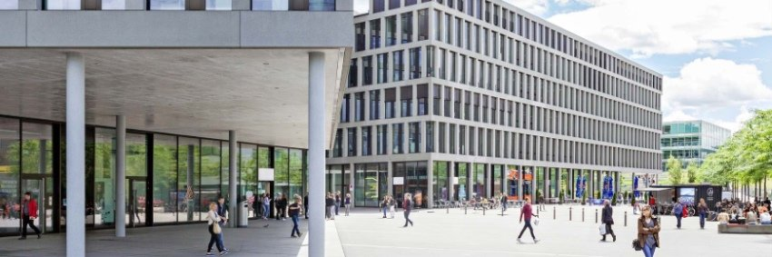

Fachhochschule Nordwestschweiz (FHNW)
Teaching and Research in Tune with the Times
In fulfilling its fourfold mandate – education/training, continuing education, applied research and development, and services to third parties – the FHNW puts quality and a focus on the future front and centre. One central concern is graduates' success in the employment market. Therefore, the FHNW always keeps the social context in mind in its teaching and research. Particular focus is placed on interdisciplinarily addressing major social issues and challenges, such as the ageing society, the turnaround in energy policy and the consequences of the digital revolution.
Diverse and Interdisciplinary
The nine schools of the FHNW cover a broad spectrum of subjects and enable diverse, interdisciplinary research. The skills of the lecturers and researchers, the excellent infrastructure and the regional, national and international network of the FHNW offer excellent conditions for addressing manifold issues from the worlds of science, business, politics, culture and society.
A Campus Culture Promoting Innovation
Expertise alone is no longer enough today. In a hyperconnected world with global value chains, the ability to think in an interconnected way and to consider issues in their overall context is a crucial factor for the success of innovations. For a country with few natural resources like Switzerland, innovative strength is of vital importance. The FHNW therefore considers it essential to inspire the skilled workers of tomorrow to take an inquisitive look at the "bigger picture" and to enable them to take part in interdisciplinary collaboration.
International Orientation
People from more than 60 countries work and study at the FHNW. The FHNW benefits from this diversity and prepares its students for the challenges posed by a globalised economy and society. The FHNW's international activity includes partnerships with international universities and institutions, involvement in European research programmes and offering tri-national and multi-language degree programmes.
Operation
The FHNW is owned by the four operating cantons Aargau, Basel-Landschaft, Basel-Stadt and Solothurn. These each govern the FHNW with a three-year mandate. The interfaces between the FHNW and the operators are the Interparliamentary Commission (IPK) and the Government Committee, which consists of the four Directors of Education of the operating cantons.
